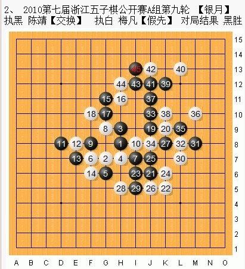
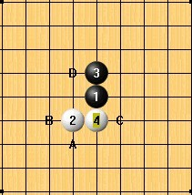
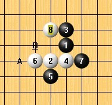
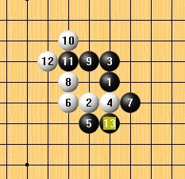
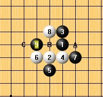
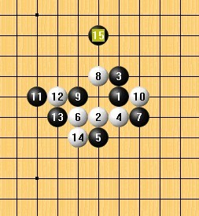
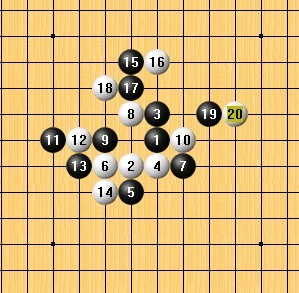
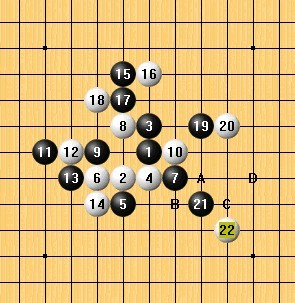

棋评之执黑陈靖【交换】执白梅凡【假先】对局结果黑胜
#1 棋评之执黑陈靖【交换】执白梅凡【假先】对局结果黑胜 作者：龍九囝 发表时间：2010-11-28 5:14:00
前言：呵呵，论坛上那么多能说会道的人，怎么没多少人参加这次评棋赛呢，由于组织方没有规定一人只能写一篇棋评参加，为了增加点竞争的气味，我就自己跟自己争排名，那我就多写几篇，占据3甲，奖品还是很丰富的，呵呵。
我的第二个参赛棋评的对局是

两位都算是老棋手了，如果两人只比名气的话，梅凡名气方面远远盖过陈靖，梅凡的最佳成绩应该是夺过08五子棋锦标赛冠军，自己还写了很多篇文章，实力强，也要会推销自己，这点他做的很好。 我相信赛前，大多人认为梅凡会取胜，因为名气大阿。这并不是个人客观的认为，如果你想多了解一下梅凡，你只要到GOOGLE，或者百度，一搜，就会找到关于梅凡的很多资料，但相比起来，你要是搜索陈靖，出现的将不是会下五子棋的陈靖，很多名人名字都叫陈靖阿，同名的人还是很多的，一个名字决定一个人的命运， 还是有点道理的。

那我们来看看双方的对弈棋谱巴，这里梅凡给了“银月”开局，一般来说，银月拿黑还是比较有利的，陈靖交换了（拿黑）。
在经过多年研究，如果你有关注五子棋的发展跟研究论文+作品棋谱的话，你会知道，在2打情况下。其实银月开局可下的第4手只有一个，也就是梅凡给的这个4手。
5打得话，这个C点是必胜的，由于组织方没有给出他们两人的打点，所以这里大胆猜测，陈靖的2个打点就是A点跟C点，C点是不可能留下的。
当然了，开局阶段就跟大部分的棋迷想的一样选择了A点留下。
这个A打点，应该是比较新的研究点。银月这个开局很多人都研究过，其比赛历史证明，D点才是过去第2打点第一选择，如不过随着研究的深入，更多人愿意使用这个A点来比拼，可能认为A这个点比D点更好控制。如果你有打过去的比赛棋谱的话，你会感觉到D点下的比较多。
这个A点要是对于没怎么下过的人，白方将是非常头痛的。

6手刚开始应该是有研究过的一手白强手，虽然是简单的一手连3，但就个人而言，6手下哪都感觉不妙。
8手先防黑的活2这种手段，一般来说，新手很难会想到巴，这里值得我们学习的一手。
这里如果稍微会下的，可能会弄个等招什么的，其实那不怎么好，所以相信8手应该是最佳着。不然结果可能就会是下面这样。

开局阶段是非常重要的，这里相信一个道理：开局靠研究，中盘靠计算。如果你想下好开局，建议稍微研究。

黑方给出了一个这个9手，我相信这样白棋是很难受的，不过广大的棋迷，不用担心，10手之前都是研究过的，10手下A点，虽然看起来白棋很委屈，其实这个点，让白棋稍微可以呼吸了一下。相信这样双方都比较平衡，顶多黑稍优点。

黑给出了跳空眠3，这样的跳空眠3，是典型的占据外围的手段，不去跟防是很危险的，11后是着法，13手也是着法。顺便盖了白的眠3，15手补棋，把白可能要跳得地方先盖了，这里可以说白非常的难受，目前情况是黑占据外围，还制造了一个远活2，而白棋整个身子都被包起来了。

16手个人认为最佳，最好的防守是带有进攻的，16盖了黑棋可能会利用的点，自己也制造了一个反。黑方这里并没有马上连3，而是挡住了白的一个空活2，是一种牵制手段，高手都知道所谓的组合攻击，在没有确定一定的优势之前，乱攻是很危险的。 一直到20手，双方都在“盖”这是一门艺术。

在双方都把对方可能要伸展的棋都盖完后，最先盖完的就有利了，这个时候
#2 Re:棋评之执黑陈靖【交换】执白梅凡【假先】对局结果黑胜 作者：紋枰論道 发表时间：2010-11-28 12:51:31
这个谱不全，46防10上唯一，然后黑44上面做棋，然后就没防了［ 掌棋宣传员 于 2010-11-28 13:13:42 时花20金币送鲜花一朵］
#3 Re:棋评之执黑陈靖【交换】执白梅凡【假先】对局结果黑胜 作者：踵酃 发表时间：2010-11-28 13:35:17
唯一的意思是说还有一手可防，白棋10上一子只能说多拖延几手，后面还是死。
请慎用“唯一”一词， 一般来说这个词“唯一”意思是可以防住的。
棋谱不是不全，这里相信梅凡已经看到黑棋可以杀了，也了解对手有能力杀出去，所以没必非要下到43为止。
［此帖子已被 踵酃 在 2010-11-28 13:39:01 编辑过］
#4 Re:棋评之执黑陈靖【交换】执白梅凡【假先】对局结果黑胜 作者：小帮帮 发表时间：2010-11-28 17:16:41
44走40下面，怎么杀？#5 Re:Re:棋评之执黑陈靖【交换】执白梅凡【假先】对局结果黑胜 作者：紋枰論道 发表时间：2010-11-28 19:11:35
大哥，我自己下的棋难道还不知道谱全不全么？［ 踵酃 于 2010-11-28 22:58:35 时花20金币送鲜花一朵］
#6 Re:棋评之执黑陈靖【交换】执白梅凡【假先】对局结果黑胜 作者：紋枰論道 发表时间：2010-11-28 19:14:59
他们说44防右边没杀，但左边的优势巨大，当时也没时间仔细算了，但实战44防左边我已经算干净了#7 Re:棋评之执黑陈靖【交换】执白梅凡【假先】对局结果黑胜 作者：踵酃 发表时间：2010-11-28 23:12:08
这里有个疑问，为什么组织方公布的棋谱是不全的？#8 Re:棋评之执黑陈靖【交换】执白梅凡【假先】对局结果黑胜 作者：小丸.net 发表时间：2011-2-7 9:13:48
通俗一点讲，组织方拿到手的棋谱是二手货，或者不知道转了几手了，难免出错。咱回头跟哥几个讲讲，加大校对力度。以后再打错谱不校对的，送官严办！
#9 Re:棋评之执黑陈靖【交换】执白梅凡【假先】对局结果黑胜 作者：dyccj 发表时间：2011-8-27 15:30:19
 学习了
学习了
#10 Re:棋评之执黑陈靖【交换】执白梅凡【假先】对局结果黑胜 作者：棋语 发表时间：2011-8-27 22:05:00
坑啊。。还以为今年的呢。。#11 Re:棋评之执黑陈靖【交换】执白梅凡【假先】对局结果黑胜 作者：小小亦默 发表时间：2011-10-21 0:07:06
说实话 都是高手
#12 Re:棋评之执黑陈靖【交换】执白梅凡【假先】对局结果黑胜 作者：吻火 发表时间：2012-3-14 20:58:42
但法国等国反对感豆腐干反对#13 Re:棋评之执黑陈靖【交换】执白梅凡【假先】对局结果黑胜 作者：林导弹 发表时间：2012-5-11 14:49:51
， 来看的晚了吧。。。。。。。。。。。。#14 Re:棋评之执黑陈靖【交换】执白梅凡【假先】对局结果黑胜 作者：小丸.net 发表时间：2012-5-11 14:53:14
哥，我求你别再挖了。。。。。